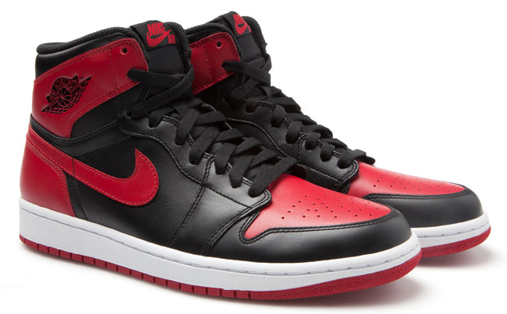

Name: Xinzhuo Dong Contact Info: xd5qj@virginia.edu
This app will track the release of limited-edition sneakers. It will contain information similar to the nike site.
These Jordan 1 were just shoes before Michael Jordan took the court in 1985. He wore the original Air Jordan I, which set a new standard for performance and style, broke league rules and captured imaginations of fans worldwide. Release Date: Dec 28, 2013 Price: $140 
Ever since Michael Jordan made magic in the 1995 playoffs, every Jordan 11 has been an instant classic. Now, the Air Jordan 11 Retro "Gamma" is in line to do the same. This colorway features a black upper and midsole, with accents of Gamma Blue and Varsity Maize. The black patent leather and translucent outsole complete the classic look. Release Date: Dec 21, 2013 Price: $185
Sign out for our mail list here
- by Xinzhuo Dong. All Rights Reserved.